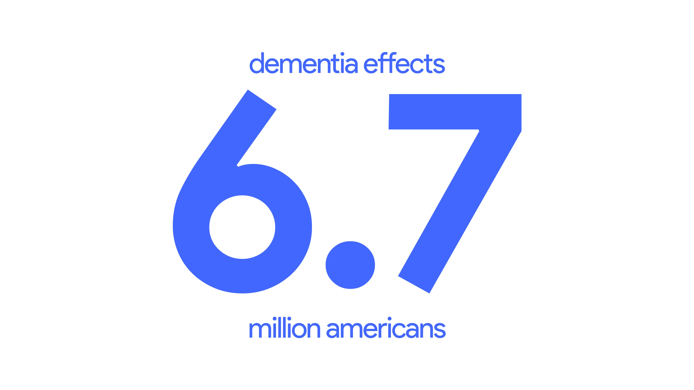
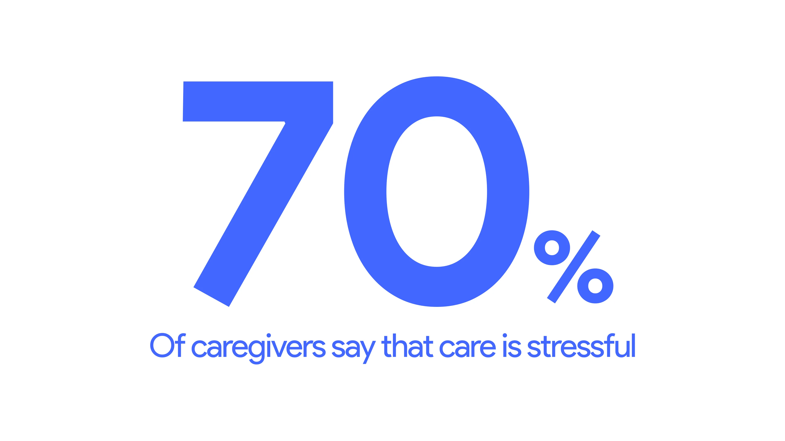
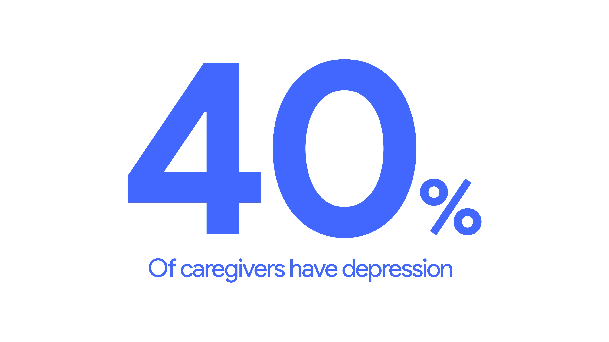
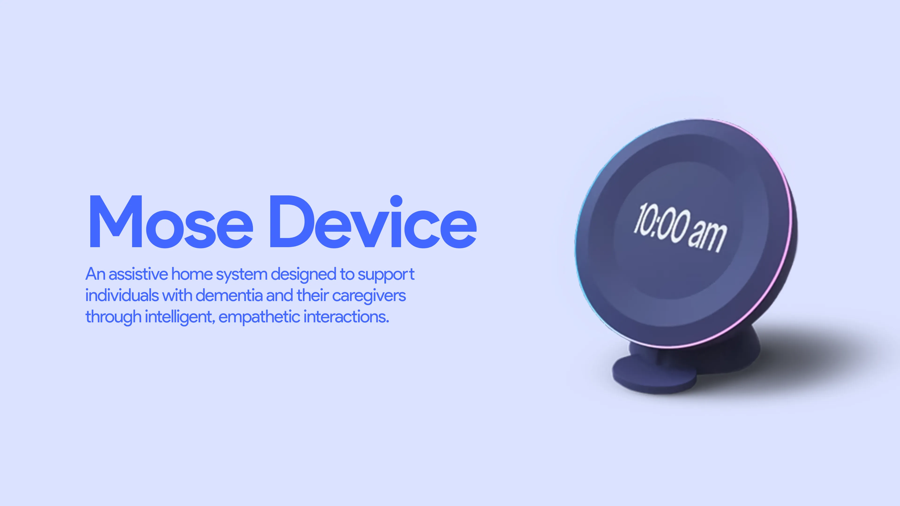

Problem
Dementia creates a growing gap between independence and safety.
Dementia doesn't just affect memory, it erodes the autonomy of the individual and places an immense emotional burden on their family. For many patients, the fear of forgetting simple daily tasks leads to social withdrawal. Meanwhile, caregivers face constant anxiety and caregiver burnout as they struggle to monitor loved ones remotely.
Research
Understanding both sides of the story.
Our research focused on a dual-stakeholder approach, combining a survey of caregivers with follow-up interviews with caregivers and health professionals. The survey gave us the scale of the load first: respondents reported providing an average of 87 hours of care a week. Set against the wider picture — roughly 6.7 million people living with dementia, 59% of caregivers reporting high to very high emotional stress and around 40% experiencing depression — the problem read less like a memory problem and more like an endurance problem.
That reframing surfaced the friction point the product had to solve: caregivers needed visibility without feeling like they were policing their loved ones, while patients needed guidance that felt like a supportive companion rather than a clinical monitor. Our insights grouped into four areas — well-being, daily care, communication, and safety risks — with wandering and attempts to leave the house standing out as the most urgent safety concern.



Population and caregiver-health figures above are drawn from the Alzheimer's Association's Alzheimer's Disease Facts and Figures report. The 87-hour weekly care figure is our own, from the caregiver survey we ran for this project.
The AI Decision
Assistive, not intrusive.
The endurance problem pointed at a specific kind of help. A person with dementia asks the same question many times an hour, and the fifth answer is where a tired caregiver's patience shows. That's the dignity problem — not the forgetting itself, but what repetition costs the relationship. So we scoped the assistant around calm, consistent repetition: familiar cues like labeled photos, recognizable voices, and name-based reminders, delivered the same way every time.
The constraint we set ourselves was that it stay non-intrusive. Caregivers had told us they wanted to know their person was safe without watching them, so the system was designed to stay quiet by default and surface a deviation from routine rather than a running feed of activity. The difference between those two is the difference between watching over someone and surveilling them.
This was a concept, not a working system. Over ten weeks we designed the interaction model and the behaviour we wanted; we did not build a model behind it. The screens below show how it was meant to respond, not something you could talk to.
Solution
An ecosystem built for
support and connection.
The Mose App
Designed for the caregiver, the app provides real-time health insights and activity monitoring. It allows for the remote scheduling of reminders, giving family members peace of mind.


The Mose Smart Device
The physical hardware serves as a gentle home companion for the patient. It delivers scheduled voice prompts and memory cues through simple spoken interaction, so support arrives without the patient needing to operate anything.

Testing
How testing changed the design.
We moved from a journey map and a feature set into a wireflow, then refined it through iterative cognitive walkthroughs, user testing sessions, and class critiques until it became a fully branded mid-fidelity flow.
The biggest change came out of those sessions. The conversational interface shifted from reactive to proactive: it started as something a caregiver queries — ask a question, get an answer — and testing pushed it toward surfacing things unprompted, like relevant support groups and doctor recommendations drawn from patterns in what was being logged. That shift, from answering to noticing, is the clearest thing testing changed about the product.
Type and contrast decisions came out of the same process. We knew many of our caregivers would be older and that fine script would be a barrier, so we moved to larger sizes and near-block letterforms.
Impact
What we validated, and what we didn't.
Testing told us the interaction model held up, and it drove the most important change we made. It did not tell us whether Mose works.
Mose was never deployed, so any claim about reduced caregiver stress or improved patient independence is design intent rather than a finding. Testing that honestly would take a longitudinal study with real caregivers over months — well outside a ten-week course.
That's where I'd start if I picked it up again: does a proactive assistant actually reduce the coordination load, or does it become one more thing to manage?